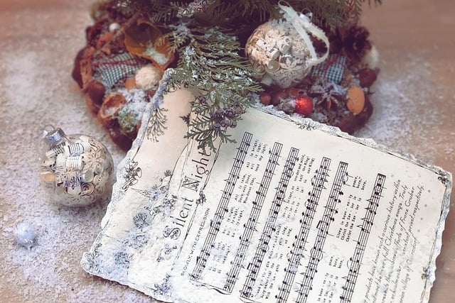

Joulumusiikkia
🎄 Joulun Taikaa Sävelin 🎵
Tervetuloa sivulle, jossa joulun tunnelma herää eloon musiikin kautta! Olipa suosikkisi perinteiset joululaulut, modernit hitit tai rauhoittavat instrumentaaliset sävelet, täältä löydät kaiken tarvittavan tekemään joulustasi entistäkin taianomaisemman. Sukella joululaulujen tarinoihin, löydä täydelliset soittolistat joka tilanteeseen ja anna sävelten viedä sinut lämpimään juhlatunnelmaan. 🎅✨ Joulun ilo on vain soiton päässä!

Joululaulut ovat olleet osa elämääni niin kauan kuin muistan. Lapsuudessani ne olivat taustamusiikki, kun koristelimme kuusta perheen kanssa, ja joskus ne kantautuivat keittiöön asti, kun äiti valmisti jouluruokia. Laulujen sanat ja melodiat eivät olleet vain säveliä – ne olivat lupaus jostain erityisestä.
"Jouluyö, juhlayö" tuo edelleen mieleeni ne illat, kun istuin isoäidin vieressä ja katselin hämyisessä huoneessa kuusen valojen loistoa. Se laulu ei ole vain kappale; se on muisto, jossa kaikki tuntui olevan täydellistä ja turvallista.
Aikuisena joululaulut ovat minulle paljon enemmän kuin perinne. Ne ovat kuin aikakone, joka kuljettaa takaisin menneisiin vuosiin – mutta samalla ne ovat myös hetki tässä ja nyt. Kun kuulen "All I Want for Christmas Is You", tunnen pirskahtelevan jouluilon ja muistan, miten olemme ystävien kanssa tanssineet sitä laulaen aivan liian kovaa.
Joululaulut merkitsevät minulle rauhaa, iloa ja yhteenkuuluvuutta. Ne ovat tapa juhlia joulun taikaa – sillä tavoin, että jokainen nuotti tuntuu olevan osa sydäntäni.
TOP 5
1. Have Yourself a Merry Little Chrismas
2. We Wish You a Merry Christmas
3. I'll Be Home for Christmas
4. It's Beginning to Look a Lot Like Christmas
5. Silent Night
Lempi soittolistani
Joulun tunnelma ei olisi täydellinen ilman musiikkia, joka täyttää huoneet lämmöllä ja juhlavalla ilolla. Soittolistat ovat minulle kuin joulun sydämen syke – ne tuovat mukanaan muistoja, luovat uusia ja saavat jokaisen hetken tuntumaan erityiseltä.
Tässä haluan jakaa kanssanne lempisoittolistani, jotka sopivat kaikkiin joulun hetkiin: rauhallisiin iltoihin glögikupposen äärellä, iloisiin perhejuhliin ja jopa lahjojen paketointisessioihin. Sukella mukaan, löydä uutta inspiraatiota tai fiilistele tuttuja klassikoita kanssani! ✨